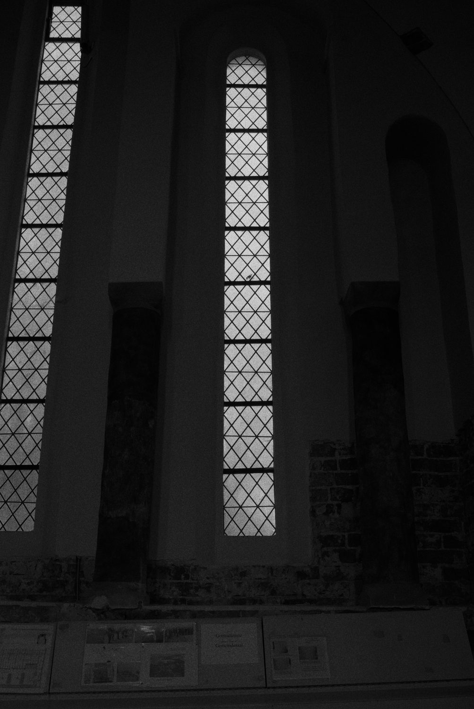
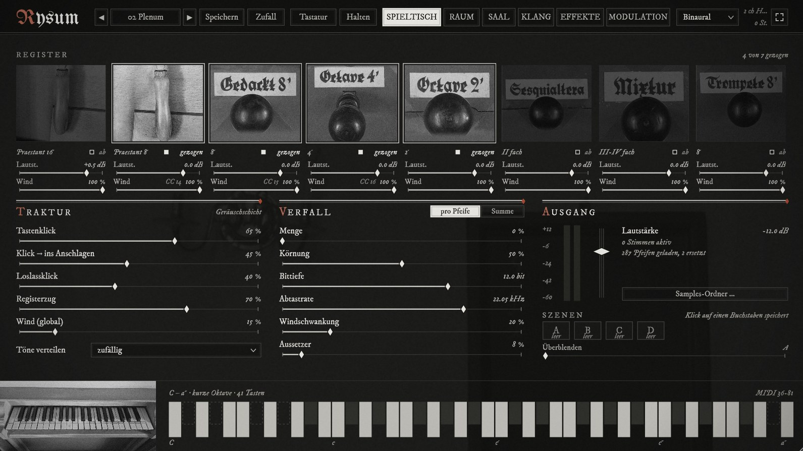
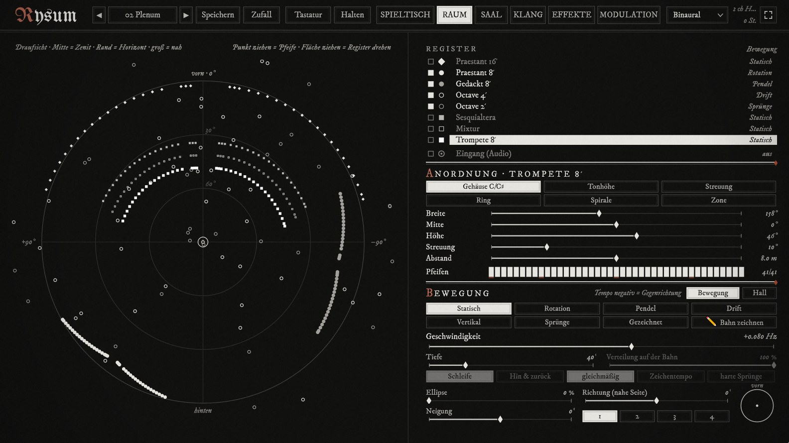
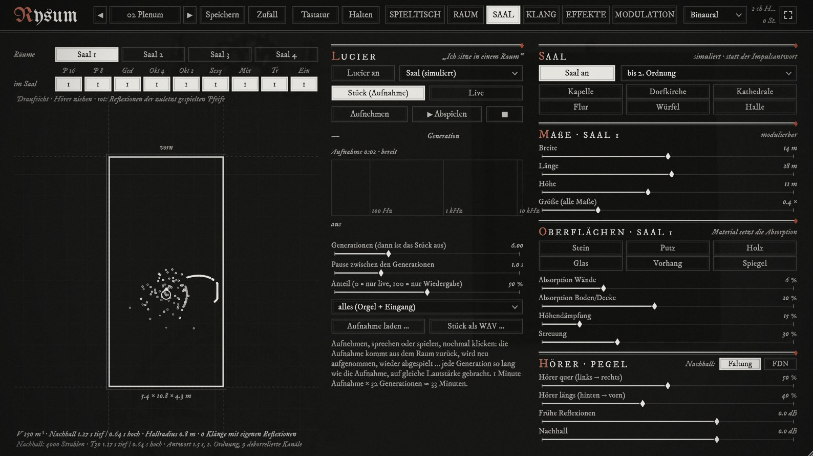
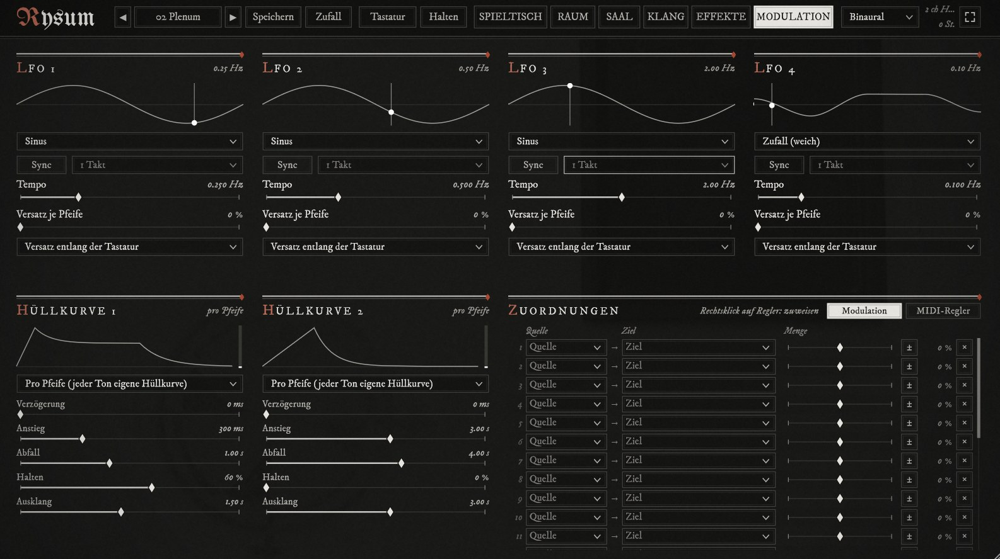
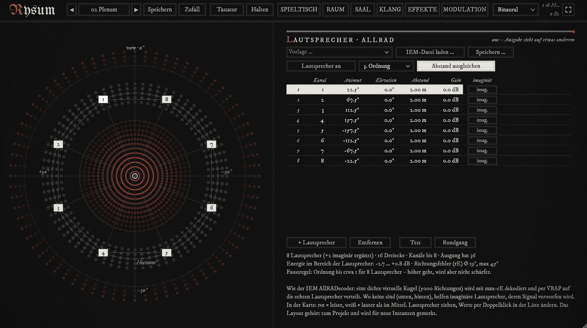

Rysum Pipe Organ Plugin
Rysum is an organ plugin (VST3 and standalone app) built from close recordings of the individual pipes of the 1442 organ in Rysum, one of the oldest playable organs in the world. It has seven stops on one manual, a short octave from C/E to a″ (41 keys) and the original quarter-comma meantone tuning. An eighth stop, a Praestant 16′, is made from the Praestant 8′ samples played an octave lower.
The plugin is in development. It is not released yet.






The sound. Every stop can be pulled and pushed like the stop knobs on the organ, each with its own volume and its own wind. With less wind the pipes get quieter, flatter, duller and unsteady, and at zero they fall silent. A noise layer adds key clicks, release clicks, the sound of pulling a stop and the blower. An unstable wind supply can shake all pipes together. Notes can be held with a double strike, so both hands stay free for the controls.
Space. Every pipe has its own place. You can drag each one around in a top view, arrange a whole stop as a ring, spiral or scatter, or draw a path with the mouse and let the pipes travel along it. The output can be stereo, Ambisonics up to fifth order, binaural for headphones, or decoded straight to a loudspeaker array, so the plugin can play a dome without any other tools.
Movement. Pipes can rotate, swing, drift, turn over your head or jump to new positions, at speeds up to 500 Hz, where the motion itself becomes a sound. Distance, Doppler shift and elliptical orbits are part of this.
Rooms. Load your own impulse response, for example a recording of a church, and every pipe gets its own version of the room. Or use the simulated room: a shoebox hall with mirror-image reflections for every sounding pipe, ray-traced reverb, four rooms to place stops in and sizes from chapel to cathedral. Walls, materials and listener position can be modulated, so the room can breathe while a chord is held.
Lucier. A mode after Alvin Lucier's I am sitting in a room: a recording is played into the room and recorded again, generation after generation, until only the room's resonances are left. It works for a recorded piece or live, with the organ itself going through the room many times at once.
Tuning. Besides the historical temperaments (meantone, Werckmeister III, Kirnberger III, Vallotti, Pythagorean, equal) it offers just intonation, 31-, 19- and 53-tone systems, Maqam Rast, Bohlen-Pierce and Scala files. It also follows MTS-ESP and MIDI tuning messages, so every key can have its own pitch.
Decay. A degradation section grinds each pipe or the whole output down with grain, bit depth, sample rate reduction, dropouts and unstable wind.
Control. Almost every parameter can be modulated with LFOs and envelopes or learned to a MIDI controller. Four scenes can be blended into each other, and dice buttons make random settings from gentle to wild.